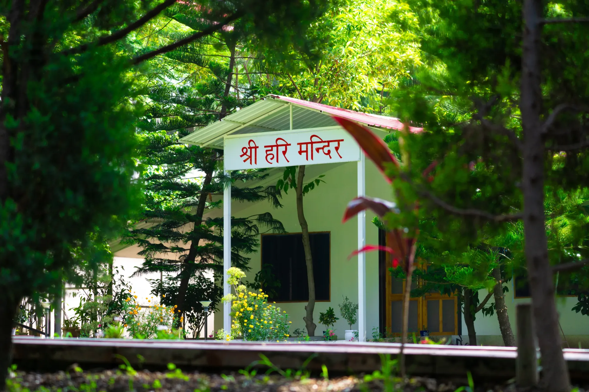

Sri Hari Mandir
At the sacred heart of the Ashram stands the Sri Hari Temple, a sanctum of devotion. Within it resides the life-size black idol of Sri Hari, a rare and wondrous form uniting both the masculine and feminine aspects of the Divine. “Sri” is the radiance of Goddess Lalita Tripura Sundari, and “Hari” the grace of Lord Vishnu. When seen in Devi-bhāva, the idol reveals the Mother; when seen in Deva-bhāva, it shines as the Lord.
Lovingly consecrated by Swamiji on 4th April 2014, the temple has since been a fountain of devotion for seekers. Each morning, the Lord is gently awakened with the chanting of the Viṣṇu Sahasranāma, and each evening, He is lovingly put to rest with the Lalitā Sahasranāma, followed by the offering of āratī. These sacred vibrations fill the temple with divine harmony that uplifts every heart.
At Sri Hari Temple, abhishekams are offered on auspicious tithis. On every Ekādaśī (the eleventh day of the lunar fortnight), the morning abhishekam is performed with the chanting of the Viṣṇu Sahasranāma, while on every Pūrṇimā (full moon) and Amāvasyā (new moon), the evening abhishekam is conducted with the recitation of the Lalitā Sahasranāma.
The Sri Hari Temple is more than a shrine; it is the living heart of the Ashram, where the Divine is experienced as both Mother and Father, guiding seekers with compassion, strength, and grace.